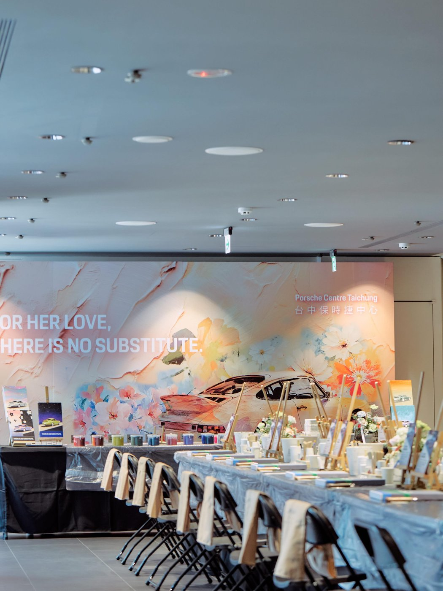

品牌合作
保時捷・母親節肌理畫 VIP 課程
場地攝影｜@mr.thanks_art
品牌合作｜保時捷－母親節肌理畫 VIP 課程。從客製化車子型號的繪畫圖樣、水晶字貼的訂製、顏色調配的課前準備，讓不會畫畫的人也可以跟著步驟完成精緻的作品。壓克力＋石英砂增加了立體感，讓繪畫跳脫平面，針對課程內容的多樣性與需求，提供企業不同程度的課程訂製。
活動現場
保時捷台中中心的活動現場紀錄，從老師示範、同學動手製作到完成作品，每一幅都因為選色不同而有各自的樣子。
設計理念
這次的車款是保時捷中的經典車型，1973 年款 911 Carrera RS 2.7 Touring。設計時簡化了車體細部，以線條劃分三種深淺，結合繪畫讓同學在選擇顏色之後，無痛完成立體的車型，實際製作時省去了調色的時間，可以更著重在作品的繪製。
繪製線稿時，發現這款車型推出時提供了不少亮色系給車主客製，鋁圈、車身裝飾線條及側面的 Carrera 字樣也可以自由搭配，簡單設計衍生了許多搶眼又耐看的組合。
課程回饋
每個環節的細微差異，即使使用同樣的圖樣，每個人都畫出了獨一無二的作品，追加的亮粉與小珍珠很適合閃亮的大家。
開發課程時常常會有一些取捨，要不要簡化調整過程一直是很難抉擇的事。聽到參加的客人們說這個設計太棒了，是最好的回饋。希望未來有更多機會可以繼續開發有趣的課程。